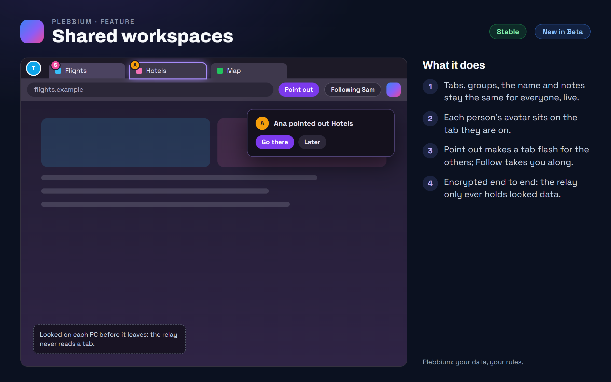

All features › Shipped › Shared workspaces
Shared workspaces
StableNew in Betasince 3612Share a workspace and it stays the same for everyone in it, live: its tabs, tab groups, name and notes. See who is on which tab, follow someone, or point a tab out to the others.

How to use it
- Share: right-click a workspace's icon › Share…, then send the invite link.
- Join: open the invite link. People without Plebbium can follow along on a view-only page in any browser.
- Point out: right-click a tab › Point out, or the Point out button beside the address bar. The tab flashes for the others, with Go there.
- Follow someone: you go along to whichever tab they are on.
- Keep a tab to yourself: right-click it › Keep this tab private. Pinned tabs never leave your PC either.
- The owner chooses who else may invite, and can remove anyone. Leaving closes the workspace and its tabs on your PC.
When it arrived
156.0.8078.3611Beta 21 Oct 2026 · Stable 22 Oct 2026 (3612)
Shared workspaces: live tabs, avatars, Follow, Point out and invite links.
156.0.8078.361222 Oct 2026 · Beta and Stable
Sharing turns a workspace's separate logins off, so everyone uses their normal logins.
Features 0.9.1Beta 30 Oct 2026 · not on Stable yet
Fixed: after a restart, shared tabs no longer double or come back once closed; each PC catches up with the shared list, in its order, and changes made offline still go.
Why it works this way
A relay that can't read what it passes on
Every change is locked on your PC with the workspace's key before it leaves, and the key travels in the invite link after the #, a part of an address browsers never send to a server. The relay at sync.plebbian.com only passes locked data along.
Your logins stay yours
Logins, cookies, passwords and history never leave your PC. Everyone in a shared workspace uses their own normal logins, so each person is signed in as themselves.
Removing someone changes the lock
When someone is removed, the workspace gets a new key, handed to each remaining member alone, and old invite links stop working.